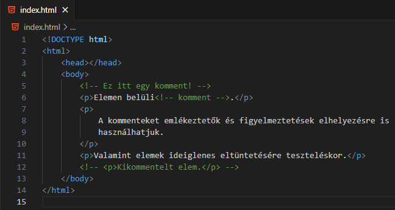

Minden Felfed
Minden Elrejt
Mi az a HTML?
Felfed
Elrejt
A HTML a HyperText Markup Language (Hiperszöveg
Jelölőnyelv) rövidítése.
Hiperszöveg, mert nem csak sima szövegből áll a
tartalom, hanem más oldalakra mutató
hivatkozásokból (link) is.
Jelölőnyelv, mert a tartalmat címkék (tag) közé,
elemekbe (element) csomagolja.
A jelölőnyelv egy olyan rendszer, amely
megjegyzésekkel látja el a dokumentumot, hogy
leírja annak szerkezetét és megjelenítését.
A jelölőnyelv egy szövegkódoló rendszer, amely
meghatározza a dokumentum szerkezetét és
formázását, és potenciálisan a részei közötti
kapcsolatot.
Forrás:
Wikipédia
Mire használjuk a HTML-t?
Felfed
Elrejt
A HTML leírja egy weboldal struktúráját.
A HTML egymásba ágyazott elemekből (element)
áll.
Ezek az elemek mondják meg a böngészőnek hogyan
jelenítse meg a tartalmat.
Ezekkel az elemekkel "címkézhetjük" a tartalom
egyes részeit.
Forrás:
w3schools
Hogyan épül fel egy alap HTML forráskód?
Felfed
Elrejt
A <!DOCTYPE html> elem mondja meg a
böngészőnek, hogy az oldal a HTML 5 szabványt
követi.
<html></html>, az úgynevezett
gyökérlem (root element).
<head></head>, az oldalra vonatkozó
metaadatok gyűjtőhelye.
<body></body>, az oldal láthatónak
tartalmának a tartóeleme.
Mik azok a HTML elemek (element)?
Felfed
Elrejt
A legtöbb HTML elem három részből áll. A
kezdőcímkéből (start tag, opening tag) a
tartalomból és a zárócímkéből (end tag, closing
tag).
A HTML címkék nem kis- és nagybetű érzékenyek
(not case sensitive). De javasolt a kisbetűs
írásmód. Például: <p> = <P>
A tartalom bármilyen szöveg és akár egy másik
HTML elem is lehet.
MINDIG HASZNÁLJUK A ZÁRÓCÍMKÉT, MERT NEM VÁRT
KELLEMETLENSÉGEKET OKOZHAT A HIÁNYA!
Az olyan elemeket, amelyeknek nincs tartalma és
zárócímkéje "üres elemeknek" (empty element,
void element) nevezzük.
Az üres elemeket is le szokták zárni a
kezdőcímkében, például: <br />
Az üres elemek listája.
Az elemek egymásba ágyazhatóak (nest).
FIGYELJÜNK RÁ, HOGY AZ ELEMEK HELYESEN LEGYENEK
EGYMÁSBA ÁGYAZVA!
Példák a zárócímke hiányára és a HTML elemek helytelen
egymásba ágyazásra?
Felfed
Elrejt
Mik azok az attribútumok (attribute)?
Felfed
Elrejt
Az attribútumok plusz információkkal szolgálnak
a HTML elemekről. Ezáltal specializálva azokat.
Az attribútumok nem kis- és nagybetű
érzéketlenek (not case sensitive). De javasolt a
kisbetűs írásmód. Például: alt = ALT
Bármely elemnek lehetnek attribútumai.
Látható, hogy a HTML kezdőcímkéjében kapnak
helyet.
Formájuk a következő: név="érték"
Ismertebbek (részletesebben majd az adott
elemeknél): style, lang, charset, href, src,
width, height, alt, title, target
Forrás:
w3schools
Forrás:
mdn
Mik azok az kommentek?
Felfed
Elrejt

A kommentek speciális elembe elhelyezett
tartalmak.
Céljait lásd a példában.
Forrás:
w3schools
Melyiket ' (aposztróf), vagy " (idézőjel) használjuk az
attribútum értékek befoglalására?
Felfed
Elrejt
Mind a kettő egyformán használható.
ÜGYELJÜNK ARRA, HOGY HA EGYMÁSBA VANNAK ÁGYAZVA,
AKKOR MEGFELELŐEN LEGYENEK LEZÁRVA!
A zárójelezés hiányában úgynevezett "boolean
attribútumokat" kapunk, amely nem az elvárt
eredményt ad(hat)ja!
Milyen kiterjesztéssel menthetünk el egy HTML állományt?
Felfed
Elrejt
Egyrészt: index.htm
Ez a régi filerendszer miatt maradt ránk, amikor
még hárombetűsek voltak a kiterjesztések.
Másrészt: index.html
A kettő közül bármelyiket lehet használni.